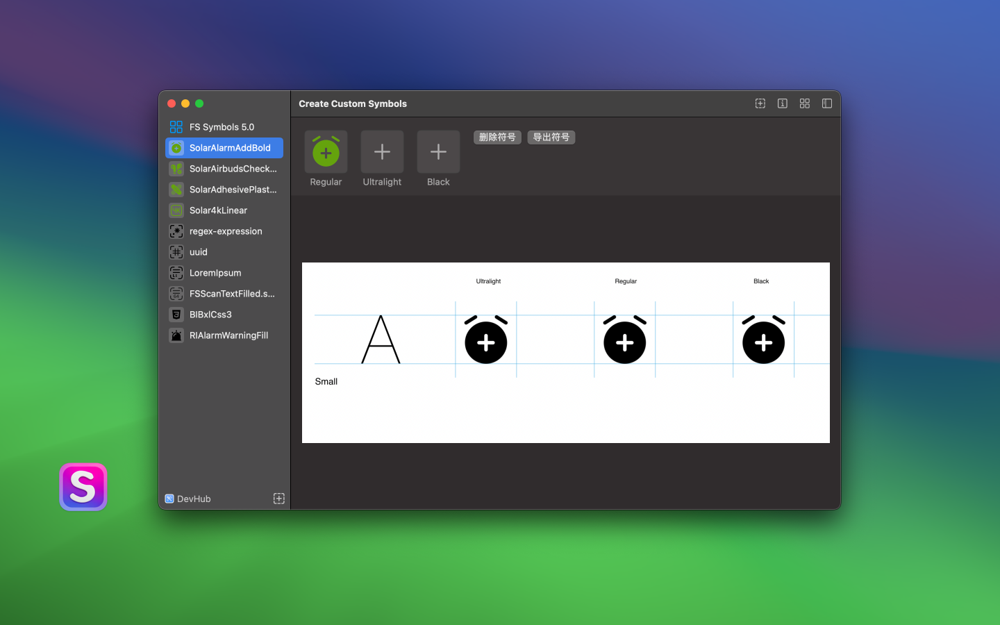
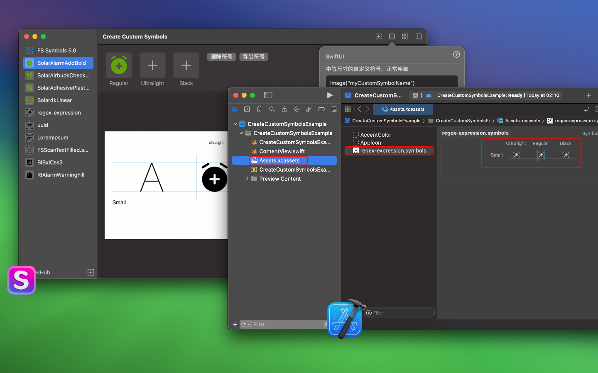
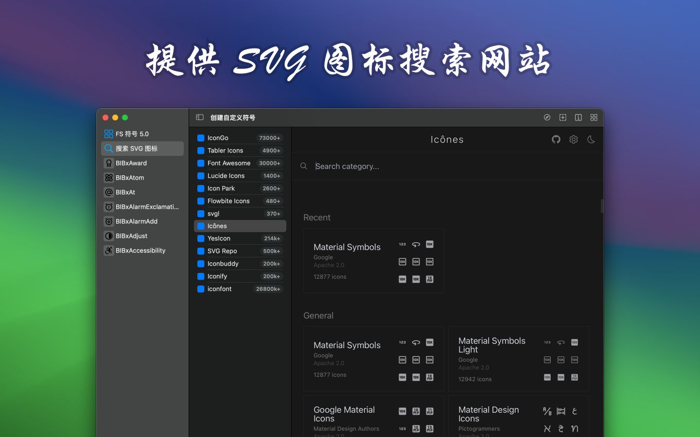

English • AppStore • 联系&支持
一个工具，能够将任意 SVG 图标转换为自定义的 SF 符号。您可以将定制的 SF 符号导入 Xcode，并在任何基于 UIKit 或 SwiftUI 的项目中使用。

通过拖放，将任何 SVG 图标轻松转换为可在 Xcode 中使用的 SF 符号文件，快速创建 SF 符号文件。

支持批量导入 SVG 图标，并批量生成 SF 符号图标
